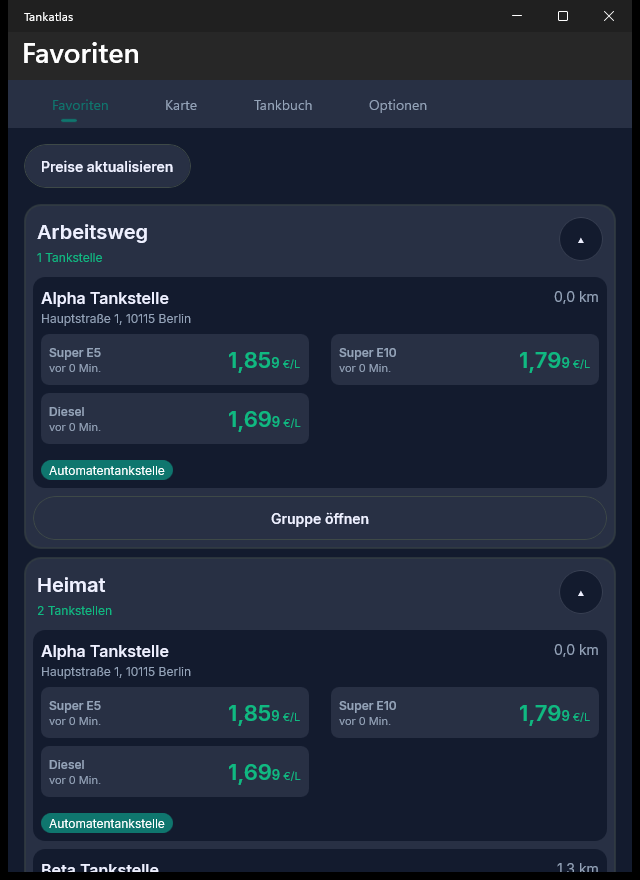
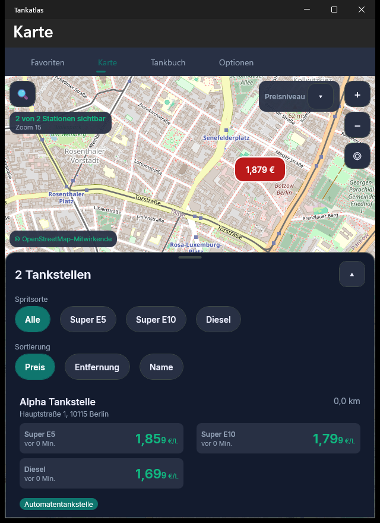
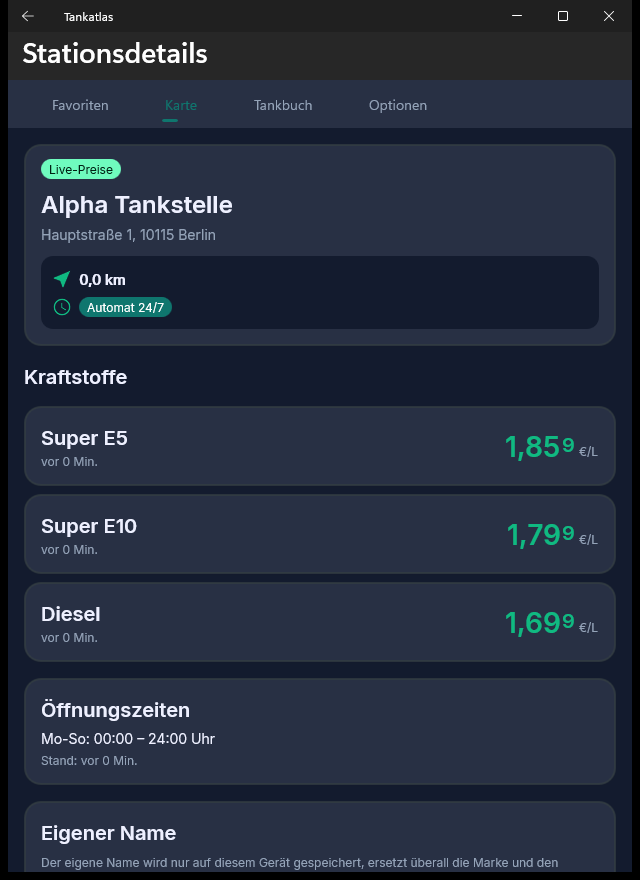
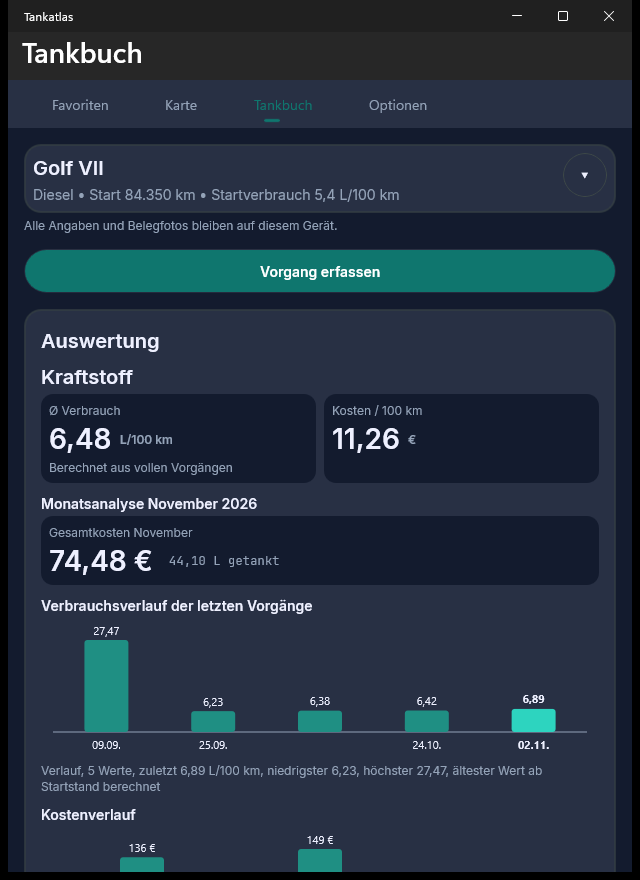
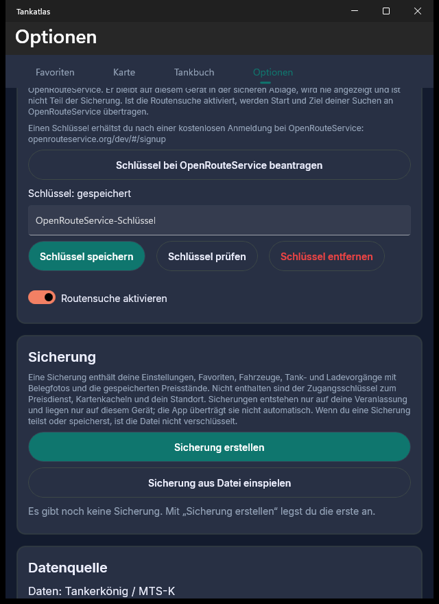

Startseite & Favoriten
Beim Öffnen der App siehst du deine Favoritengruppen mit den aktuellen Preisen deiner Spritsorten – etwa „Arbeitsweg“ oder „Heimat“. Auf Wunsch zeigt der Bereich „In der Nähe“ Tankstellen um deinen Standort. Ohne Verbindung gelten die zuletzt bekannten Preise mit Altersangabe.

Karte & Suche
Auf der OpenStreetMap-Karte findest du Tankstellen am Standort, rund um Adresse, Ort oder PLZ sowie entlang einer Route. Farbige Preismarkierungen zeigen das Preisniveau auf einen Blick; die Trefferliste liefert Entfernung, Preise und deren Alter.

Tankstellen-Details
Ein Tipp auf eine Tankstelle öffnet die Detailansicht: Adresse, Entfernung, die Preise deiner aktivierten Spritsorten samt Alter und die Öffnungszeiten. Von hier legst du die Station in einer selbst benannten Favoritengruppe ab.

Tankbuch
Erfasse Tank- und Ladevorgänge je Fahrzeug – Menge, Preis, Kilometerstand, Belegfoto. Tankatlas rechnet den Verbrauch pro 100 km und wertet Kosten aus: Durchschnitt, Monatskosten und Verlaufsdiagramme. Auf Wunsch exportierst du alles als CSV oder PDF.

Sicherung & Datenschutz
Fahrzeug- und Tankbuchdaten bleiben auf dem Gerät; eine Sicherung als ZIP-Archiv erstellst du nur auf Veranlassung – lokal, atomar, teilbar. Tankatlas hat keinen Server, kein Konto, keine Werbung und kein Tracking.
